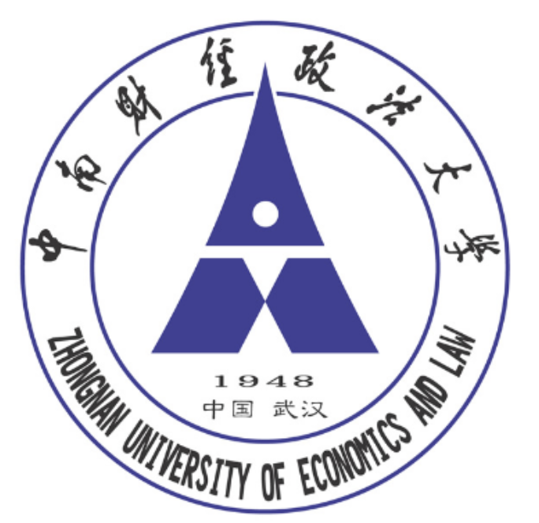

👤 个人简介
我是全泽同，目前在华中科技大学攻读会计学（全日制）硕士学位。本科毕业于中南财经政法大学，成绩优异（3.9/4.0）。我拥有丰富的财务BP、审计及项目管理实习经验，曾在美的集团、安永、立信等知名企业及机构实习。具备扎实的财会专业基础，已通过CPA 5科及ACCA。
在日常工作与学习中，我经常思考并积极推动财务流程的数字化、智能化与自动化。我熟练掌握 SQL 以及 Python (pandas, numpy) 进行多维度的数据爬取、清洗与深度分析；精通运用 Tableau 和 PowerBI 搭建商业数据看板与可视化建模；同时，我能够熟练使用 Excel VBA 编写宏程序以大幅优化重复性工作，并在实习中熟练操作 SAP 系统完成各项财务核算与跨部门流程流转。
此外，我对新技术保持高度敏锐，能够熟练运用各类 AI 前沿工具与 Agent (如 ChatGPT、Claude、Gemini 等) 深度赋能数据处理与日常工作，显著提升分析效率与产出质量。期待在财务、审计与数据驱动的商业决策等核心业务领域深耕并创造价值。
专业素养
- 执业资格：CPA (5/6)、ACCA
- 金融证书：证券从业资格证、基金从业资格证
- 英语水平：CET-6 (612)、CET-4 (620)
- 荣誉奖项：国家奖学金、校级一等奖学金、优秀学生干部、优秀毕业生、优秀党员
技能与工具
- 数据分析：精通 SQL、Python (pandas, numpy)、Tableau、PowerBI 进行分析与可视化
- 流程自动化：熟练运用 Excel VBA 编写自动化脚本，优化财务流程
- 新质生产力：熟练运用前沿 AI 模型及 Agent (ChatGPT/Claude/Gemini) 提升工作流效率
- 企业软件：熟练掌握 SAP 系统操作及进阶 Office 办公软件
🎓 教育背景
华中科技大学 985 211 双一流
[2024.09 - 2027.06]管理学院 - 会计学 (全日制) 硕士研究生
成绩排名：3.9/4.0
校园职务：学生党支部组织委员

中南财经政法大学 211 双一流
[2020.09 - 2024.06]会计学院 - 会计学 (全日制) 本科
成绩排名：3.9/4.0 (第二名)
校园职务：团支部书记、学生党支部组织委员
💼 实习经历
2025.06-2025.10
美的集团(上海)有限公司
财务BP实习生 | 库卡汽车自动化事业部
- 资金优化与自动化：结合月度资金预算与库存周转情况统筹排款，并利用 Excel VBA 优化付款审核流程，推动供应商美易单开通量提升超50%。
- 发票与退税管理：精准认领销售回款并分配至各节点开具增值税票，有效平衡总体税负，高效赋能年度 2000 万退税目标的顺利完成；对接税务准备退税文件并制作台账，汇总应付/应收发票超150张支撑完整退税流程。
- 账务审查与授信：在税务平台通过自动化比查手段，逐笔精准核验 1200 余张发票，准确率达 100%，并独立撰写3版银行授信资料支撑企业融资；全面核查 120 余项质保款、押金及个人借款，累计发送 90 余份催款函。
- 跨部门督办与外汇：建立周度跟踪机制，有效汇总 15 位项目及销售经理的开票与回款进度并制作排名表，重点督促3个滞后项目加速推进；高效提交 50 余笔转口贸易外汇支付申请，完善合同与设备清单，保障跨境支付合规顺畅。
2023.12-2024.04
安永华明会计师事务所(深圳分所)
金融组实习生 | 某头部基金公司基金产品年报审计
- 数据清洗与底稿审查：进驻客户现场导出 100 余项底层财务数据，利用数据分析技巧发现并修正报表不匹配、科目缺失等 20 余处异常；深度使用 Skywind 系统，逐项检查并修复自动底稿中的 10 多处公式链接逻辑与汇率计算错误。
- 金融报表勾稽与测算：独立复查并解决主表与附注间的复杂勾稽关系，重新精准测算债券与 ABS 投资收益并逐一核对，保障账表完全一致。
- 风险模型评估：运用数据分析思维，通过 PBC 中的久期 (Duration) 和凸性 (Convexity) 数据，对产品的利率风险敏感性进行重新估计测算，成功发现并指出了客户内部风险模型中的 3 处偏差。
- 函证程序与报告校对：严格执行函证收发闭环，制作并发送 100 多份函证，通过网络及电话多重核验地址，修正 15 份错误信息，最终函证回收率高达 95%；交叉比对校准 35 只基金的年度审计报告差异。
2022.12-2023.04
立信会计师事务所(武汉分所)
审计组实习生 | 某大型食品工业企业年度报告审计
- 实地监盘与资产清查：深入企业一线，对 3 家下属子公司的 39 种核心存货及 30 种固定资产执行严格的实地监盘，规范填列盘点表，确保账实相符。
- 实质性细节测试：针对关键科目进行科学抽样，严格抽查 50 多张原始凭证与记账凭证；针对大额资金流转，双向核对 200 多条银行存款与日记账记录，防范企业资金风险。
- 截止与合规测试：对存货流转、主营业务收入与期间费用等核心利润表项目进行顺查与逆查，穿透核对 300 多张原始凭证，严格检验企业会计处理的截止性与准则规范性。
🏫 校园经历
2021.12-2023.06
大学生创新创业训练项目
项目负责人
- 带领 6 人团队，独立撰写立项书中 1 万余字的财务可行性分析核心章节，主导设计 80 余页高质量答辩 PPT，最终以 92 分的高分（全校前5%）通过省级评审获专项立项。
- 带队深入调研 20 余家相关企业，整合多方数据源，最终形成 3 万余字的深度商业调研报告，以优异成绩完成结项（排名前3%）。
2020.12-2022.06
国际会计沙龙组织
学生秘书长
- 全面负责大型校园专业赛事活动的组织、策划与线上线下宣传工作，成功邀请 5 名国际四大会计师事务所的资深员工担任大赛特邀评委。
- 主导跨部门协作，成功外联并整合 4 家企业赞助商的资金与实物资源；引入精细化财务预算管理，将整场活动的预算执行偏差率严格控制在 5% 以内。